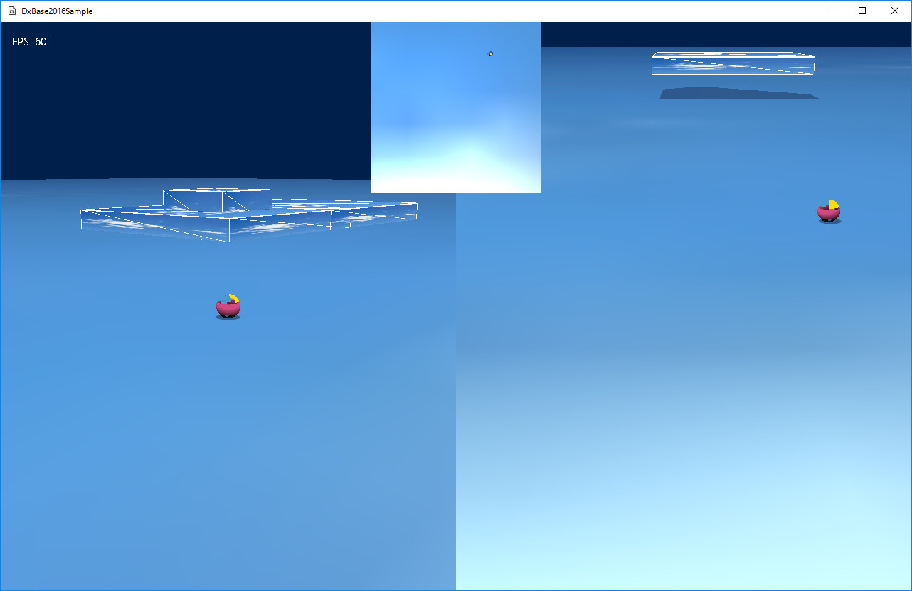

図3003a
左がいつものようにコントローラで操作できる画面、右は固定カメラで、中央上部の小さい画面は、ミニマップ風で真上から見ています。
//ビュー類の作成
void GameStage::CreateViews(){
//最初にデフォルトのレンダリングターゲット類を作成する
//パラメータの2048.0fはシャドウマップのサイズ。大きいほど影が細かくなる（4096.0fなど）
//影を細かくするとメモリを大量に消費するので注意！
CreateDefaultRenderTargets(2048.0f);
//影のビューサイズの設定。この値を小さくすると影が表示される範囲が小さくなる。
//値が小さいほうが影は細かくなる
//スタティック変数なので一度設定したらその値はステージを超えて保持される。
Shadowmap::SetViewSize(32.0f);
//マルチビューコンポーネントの取得
auto PtrMultiView = GetComponent<MultiView>();
//マルチビューにビューの追加
auto PtrView = PtrMultiView->AddView();
//ビューの矩形を設定（ゲームサイズの縦半分）
Rect2D<float> rect(0, 0, (float)640, (float)800);
//ビューの背景色
Color4 ViewBkColor(0.0f, 0.125f, 0.3f, 1.0f);
//最初のビューにパラメータの設定
PtrView->ResetParamaters<LookAtCamera, MultiLight>(rect, ViewBkColor, 1, 0.2f, 1.0f);
//最初のビューのビューのライトの設定
auto PtrLight = PtrView->GetMultiLight()->GetLight(0);
PtrLight->SetPositionToDirectional(-0.25f, 1.0f, -0.25f);
//ビューのカメラの設定
auto PtrCamera = PtrView->GetCamera();
PtrCamera->SetEye(Vector3(0.0f, 5.0f, -5.0f));
PtrCamera->SetAt(Vector3(0.0f, 0.0f, 0.0f));
//マルチビューにビューの追加2
PtrView = PtrMultiView->AddView();
//ビューの矩形を設定（ゲームサイズ右半分）
rect = Rect2D<float>(0, 0, (float)640, (float)800);
rect += Point2D<float>(640.0f, 0);
PtrView->ResetParamaters<Camera, MultiLight>(rect, ViewBkColor, 1, 0.2f, 1.0f);
//ビューのビューのライトの設定
PtrLight = PtrView->GetMultiLight()->GetLight(0);
PtrLight->SetPositionToDirectional(-0.25f, 1.0f, -0.25f);
//ビューのカメラの設定
PtrCamera = PtrView->GetCamera();
PtrCamera->SetEye(Vector3(0.0f, 2.0f, -5.0f));
PtrCamera->SetAt(Vector3(0.0f, 0.0f, 0.0f));
//マルチビューにビューの追加3
PtrView = PtrMultiView->AddView();
//ビューの矩形を設定（ミニマップ風）
rect = Rect2D<float>(0, 0, (float)240, (float)240);
rect += Point2D<float>(520.0f, 0);
PtrView->ResetParamaters<Camera, MultiLight>(rect, ViewBkColor, 1, 0.0f, 0.2f);
//ビューのビューのライトの設定
PtrLight = PtrView->GetMultiLight()->GetLight(0);
PtrLight->SetPositionToDirectional(-0.25f, 1.0f, -0.25f);
//ビューのカメラの設定
PtrCamera = PtrView->GetCamera();
PtrCamera->SetEye(Vector3(0.0f, 10.0f, 0.0f));
PtrCamera->SetAt(Vector3(0.0f, 0.0f, 0.0f));
PtrCamera->SetUp(Vector3(0.0f, 0.0f, 1.0f)); //上から見るのでUpを変える
}
//最初のビューにパラメータの設定
PtrView->ResetParamaters<LookAtCamera, MultiLight>(rect, ViewBkColor, 1, 0.2f, 1.0f);